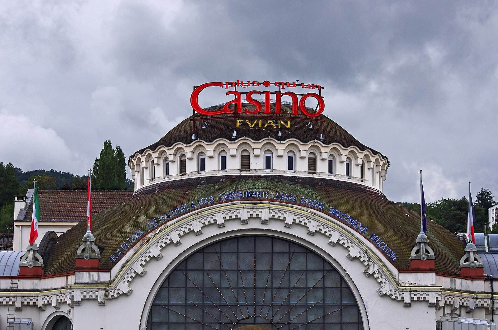

Sports · Golf
The Amundi Evian Championship 2027
- Dates
- –
- Venue
- Evian Resort Golf Club
- Location
- Évian-les-Bains, France
- Format
- In-person
- Category
- Golf
- Industry
- Golf
- Organiser
- Evian Championship / LPGA / LET
- Official website
- https://www.evianchampionship.com/
About
Championship-round dates are local civil dates 8-11 July 2027 at Evian Resort Golf Club, Evian-les-Bains.
Topics: LPGA major, golf, Evian Championship.
No organiser attendance figure found on the official pages fetched 24 Nov 2026 for this upcoming edition. Ranked by our estimated size tier 'large' (30,000-100,000 attendees/visits), a judgement from format, venue and scale, not an official number.